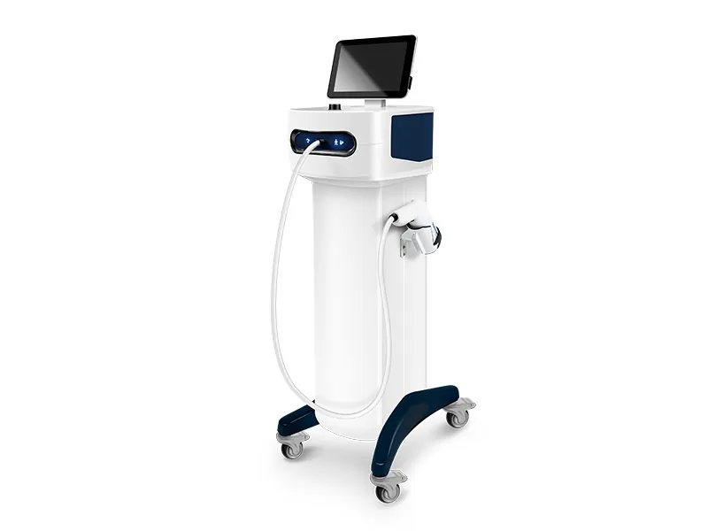

הרחב את פוטנציאל ההחלמה
מערכת הקריותרפיה החדשנית של Longest, LGT-2410S, נועדה לניהול כאב והחלמה יעילים יותר עבור מצבים אורתופדיים ופציעות ספורט. המערכת מספקת טיפול קור יעיל במיוחד — מורידה במהירות את טמפרטורת הרקמה הרכה המיועדת, מה שמסייע בהפחתת דלקת, בצקת, מהירות הולכה עצבית, מטבוליזם תאי וזרימת דם מקומית. מערכת טיפולית נוחה, ידידותית, חסכונית ובעלת יעילות גבוהה.
צפה בגלריהטמפרטורת טיפול
-78°C
מערכת הקריותרפיה LGT-2410S מכל הזוויות

מערכת הקריותרפיה LGT-2410S משלבת את השפעות הקור והלחץ. בגליל, נוזל CO₂ נמצא תחת לחץ. בעת הטיפול, השסתום נפתח והגז זורם דרך האפליקטור ופוגע באזור המטופל בטמפרטורה של -78°C ובלחץ של 50 בר. בטמפרטורת החדר, פגיעה באזור המטופל ממרחק 4 ס"מ יכולה להוריד את טמפרטורת העור של האזור המטופל ל-4°C תוך 30 שניות.
-78°C
טמפרטורת הטיפול
50
בר לחץ
4°C
טמפרטורת עור בטיפול
30s
זמן קירור
קריותרפיה היא תוספת מצוינת לטיפול במצבים הבאים:
מסך מגע 10.1"
1 שנייה עד 10 דקות
40×48×125 ס"מ
27.5 ק"ג
-3°C עד 40°C
סיוע בטיפול בנפיחות וכאב מפציעות חריפות
ניטור טמפרטורת עור בזמן אמת • הדמיית תמונת טיפול • הנחיית הפעלה • מסד נתוני מטופלים • איתור אזור מטופל • פונקציית NRS • ניטור גליל
באמצעות CO₂ נוזלי בטמפרטורה של -78°C ובלחץ גבוה של 52 בר, טמפרטורת פני העור מופחתת ל-4°C תוך 30 שניות בלבד. שילוב הקור הקיצוני עם הלחץ הגבוה מפעיל שרשרת של תגובות פיזיולוגיות המביאות ליתרונות טיפוליים משמעותיים.
ככל שהעור מתקרר מהר יותר, ההלם התרמי חזק יותר — וכך גם תגובת כלי הדם ומנגנוני הריפוי. קירור מהיר הוא המנגנון החיוני לגירוי תגובה וזומוטורית חזקה.
לחץ גבוה מגביר את השפעות הקור, מפעיל קולטני עור ומאפשר חדירה עמוקה לרקמות. הוא גם מגרה גופיפי פאציניוס לאפקט הרפיית שרירים.
הרחבת כלי דם לאחר טיפול
עלייה בסף הכאב
הפחתת סמני דלקת
האטת הולכה עצבית
שיפור זרימת לימפה
עלייה בנוראדרנלין
מבוסס על מחקרים מאת Algafly & George (2007), Banfi et al. (2010), Hausswirth et al. (2011), Rymaszewska et al. (2018) ועוד.